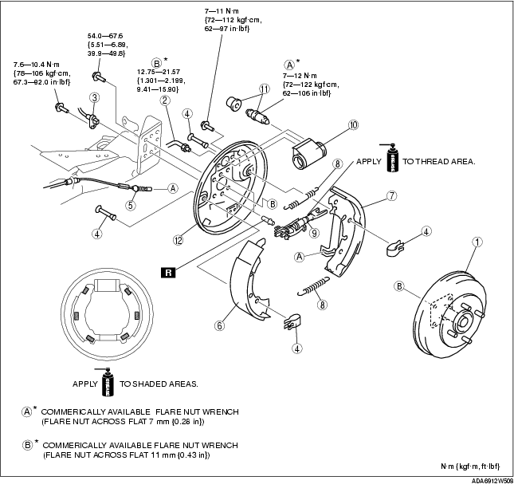
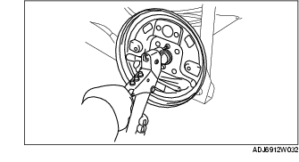
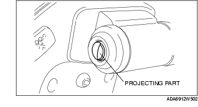
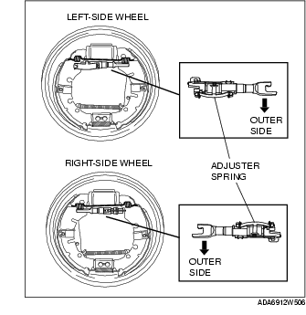

Rear brake (drum) removal/installation
1. Remove in the order indicated in the table.
2. Install in the reverse order of removal.
3. After the installation, adjust the parking brake, and inspect the following.
- • If there is any malfunction, adjust the part.
- (1) Depress the brake pedal a few times, then verify that the brakes do not drag.
- (2) Inspect the pedal-to-floor clearance.
- (3) Inspect the parking brake lever stroke.
- • The securing part of the parking brake cable could be damaged if the parking brake lever is pulled when the hub knuckle and brake drum component are removed. Always operate the parking brake lever only when the hub knuckle and brake drum component are installed.
- • If the clearance between the brake drum and shoes is excessively large, the auto-adjusting function may not function properly. When the brake drum and shoes are removed, verify the clearance and adjust if necessary by rotating the adjust screw using a flathead screwdriver. (See BRAKE SHOE CLEARANCE ADJUSTMENT)

.
Backing Plate Removal Note
1. Remove the rivets installing the backing plate using a drill.

2. Remove the backing plate.
Backing Plate Installation Note
1. Install the backing plate to the torsion beam using any commonly available riveter.

Wheel cylinder Installation Note
1. Install the wheel cylinder to the back plate with the part of the piston that contacts the brake shoe in the direction shown in the figure (projecting part facing outward).

Adjuster, Shoe Return Spring Installation Note
1. Before installing the adjuster, verify that the adjusting function operates properly by pressing the ends of the adjuster inward a few times.

- • Do not use excessive force when testing the adjuster since the adjuster spring can easily be deformed.
2. Install the adjuster and shoe return spring in the direction shown in the figure.

Shoe return spring Adjuster
- • Install with the adjuster spring facing towards the vehicle outer side. (Left-side wheels)
- • Install with the adjuster spring facing towards the vehicle inner side. (Right-side wheels)
- • Install with the longer side of the adjuster end tab on the trailing shoe side facing towards the outer side of the vehicle. (Right and left-side wheels)